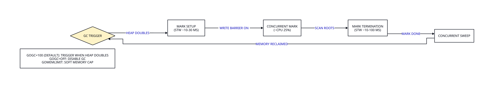
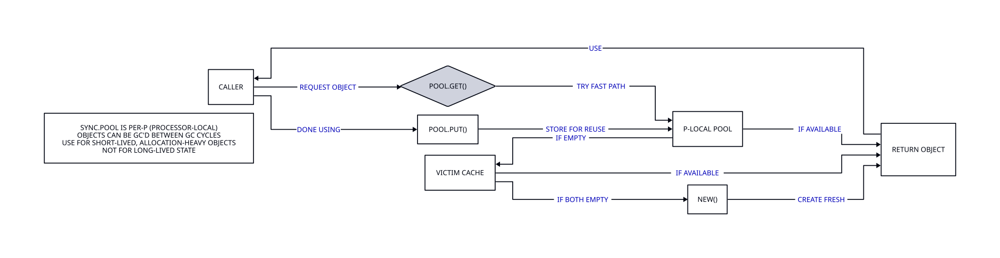
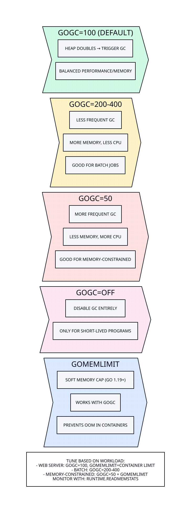
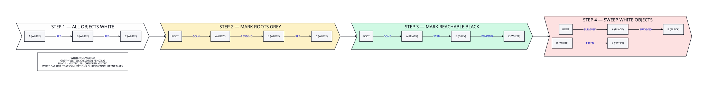

sync.Pool و اجتناب از تخصیصهای غیرضروری، میتوانید عملکرد برنامه خود را بهطور قابل توجهی بهبود ببخشید.بهینهسازی حافظه و Garbage Collector
مدیریت بهینهی حافظه از عوامل کلیدی در پایداری، کارایی و مقیاسپذیری اپلیکیشنهای Go است. یکی از ویژگیهای Go داشتن Garbage Collector مدرن و کارآمد آن است اما سوءاستفاده یا ناآگاهی از رفتار حافظه میتواند منجر به تأخیرهای غیرضروری، افزایش فشار روی CPU و مصرف رم بالا شود. GC در Go یک Concurrent Mark-and-Sweep collector است:
Concurrent : در بیشتر مراحل همراه اجرای برنامه عمل میکند و نیاز به stop-the-world ندارد.
Low-latency : توقفهای کوتاه دارد — معمولاً زیر ۵۰۰ میکروثانیه.
Generational نیست : برخلاف JVM تمام اشیاء را یکسان بررسی میکند و از تقسیمبندی بر اساس سن شیء بهره نمیبرد.
در PHP هر درخواست یک process جداگانه است و حافظه در پایان درخواست آزاد میشود. اما در Go برنامه یک process long-running است و memory leak بهمرور زمان انباشته میشود. به همین دلیل درک و مدیریت حافظه در Go اهمیت بسیار بیشتری دارد.
مصرف منابع خود را بشناسید. هر بایتی که تخصیص میدهید، بایتی است که جمعآور زباله باید ردیابی کند. در سیستمهای با توان عملیاتی بالا، الگوهای تخصیص حافظه اهمیت بیشتری از سرعت خام CPU دارند.
نویسندگان مهندسی نرمافزار | The Pragmatic Programmer

12.4.1 Stack و Heap
Twitch برای مدیریت میلیونها اتصال همزمان WebSocket از Go استفاده میکند. یکی از بزرگترین چالشها، فشار GC ناشی از تخصیص مکرر بافرهای موقت بود. در هر اتصال WebSocket، دادهها به بافرهای موقت خوانده میشوند، پردازش میشوند و سپس بافر آزاد میشود.
با میلیونها اتصال همزمان، این الگوی تخصیص-و-آزادسازی باعث میشد GC هر چند ثانیه یکبار اجرا شود و هر بار چند میلیثانیه مکث ایجاد کند.
این مکثها برای یک سرویس استریم زنده قابلقبول نبود.
با استفاده از sync.Pool برای بازاستفاده از بافرها و تنظیم GOGC، تیم Twitch توانست تأخیر GC را بهطور چشمگیری کاهش دهد. sync.Pool یک pool از اشیاء قابل بازاستفاده است که به GC اجازه میدهد اشیاء بلااستفاده را در زمان کمبود حافظه پاک کند.
وقتی یک بافر لازم است، ابتدا از pool گرفته میشود و فقط اگر pool خالی بود، بافر جدیدی ایجاد میشود.
پس از استفاده، بافر به pool برمیگردد تا دوباره استفاده شود.
این سادهسازی ظریف اما تأثیرگذار بود.
نتیجه: کاهش ۴۰ درصدی زمان مکث GC، کاهش ۲۵ درصدی مصرف حافظه کل، و افزایش ۳۰ درصدی توان عملیاتی اتصالات. این بهینهسازی بدون تغییر در منطق اصلی برنامه انجام شد — فقط نحوه مدیریت حافظه بافرها تغییر کرد.
این مثال عالی از این اصل است که بهینهسازی حافظه اغلب نیازی به بازنویسی منطق ندارد، بلکه فقط درک بهتر رفتار GC و الگوی تخصیص برنامه لازم است.
GopherCon 2019 ، ۲۰۱۹
در Go حافظه بهطور کلی به دو ناحیهی اصلی تقسیم میشود:
Stack : حافظه محلی، سریع، خودکار آزاد میشود. معمولاً برای مقادیر محلی توابع استفاده میشود. تخصیص روی stack تنها جابجایی یک اشارهگر است و هزینهای نزدیک به صفر دارد.
Heap : حافظه مشترک و تحت نظر GC است. مقادیری که عمر بلندتری دارند یا به خارج از scope منتقل میشوند روی heap ذخیره میشوند و آزادسازی آنها هزینهبر است. هر تخصیص روی heap به معنای کار اضافه برای GC در آینده است.
Go به صورت خودکار تصمیم میگیرد که مقدار روی stack یا heap باشد. این تصمیم از طریق Escape Analysis در زمان کامپایل انجام میشود.
| ویژگی | Stack | Heap |
|---|---|---|
| سرعت تخصیص | بسیار سریع (جابجایی اشارهگر) | کندتر (جستجوی بلوک آزاد) |
| مدیریت آزادسازی | خودکار (خروج از scope) | Garbage Collector |
| قابلیت دسترسی | فقط تابع محلی | مشترک بین توابع |
| محدودیت حجم | محدود (معمولاً ۱-۸ MB) | بزرگ (محدود به حافظه سیستم) |
| Escape Analysis | اگر در scope بماند | اگر از تابع فرار کند |
| تأثیر بر GC | بدون تأثیر | فشار به GC |
12.4.2 Escape Analysis
جمعآور زباله Go برای تأخیر کم طراحی شده، نه حداکثر throughput. متغیر GOGC این مصالحه را کنترل میکند: مقدار بالاتر یعنی کار GC کمتر اما حافظه بیشتر؛ مقدار پایینتر یعنی کار GC بیشتر اما حافظه کمتر. مقدار پیشفرض ۱۰۰ نقطه شروع خوبی است، اما حجم کاری عملیاتی اغلب نیاز به تنظیم دارد.
توسعهدهنده GC در Go | GopherCon 2018
Escape Analysis یعنی بررسی اینکه آیا یک متغیر فقط داخل همان تابع باقی میماند یا به بیرون از تابع هم میرود. اگر فقط داخل تابع استفاده شود روی stack ذخیره میشود که سریعتر و سبکتر است.
اگر به بیرون منتقل شود — مثلاً به return برود یا به goroutine داده شود — روی heap قرار میگیرد و نیاز به بررسی توسط Garbage Collector دارد.
type User struct {
Name string
}
// On stack — return value is copied
func stackAllocated() User {
return User{Name: "Ali"}
}
// On heap — pointer escapes outside function
func heapAllocated() *User {
return &User{Name: "Sara"}
}
برای مشاهده تحلیل کامپایلر از فلگ -m استفاده کنید:
$ go build -gcflags '-m' main.go
# Output:
# ./main.go:12:6: moved to heap: User{Name: "Sara"}
# ./main.go:10:6: stackAllocated User does not escape
12.4.3 pprof: تحلیل حافظه با ابزار پروفایلینگ
اولین قدم در بهینهسازی حافظه، اندازهگیری و شناسایی مشکلات است. Go ابزار قدرتمندی به نام pprof برای پروفایلینگ CPU و حافظه ارائه میدهد. بدون پروفایلینگ، هر تلاشی برای بهینهسازی حافظه صرفاً حدس و گمان است.
flowchart LR
A["go test -memprofileتولید فایل پروفایل"]
B["go tool pprofتحلیل تعاملی"]
C["top / web / listشناسایی نقطه تخصیص"]
A --> B --> C
subgraph EXTRA["ابزارهای تکمیلی"]
direction TB
E1["net/http/pprof — پروفایلینگ زنده در production"]
E2["runtime.ReadMemStats — خواندن آمار حافظه در کد"]
E3[فرمانهای کلیدی pprof:top20 (بیشترین تخصیص) | web (نمودار گراف) | list...]
E4["pprof با فلگ -inuse_objects (تعداد اشیاء) یا -alloc_objects (تخصیص تجمیعی)"]
end
C --> EXTRA
classDef titleBox fill:#ecfdf5,stroke:#10b981,stroke-width:1.5px,color:#1f2937;
classDef stageBox fill:#e6f9fc,stroke:#00ADD8,stroke-width:1.5px,color:#1f2937;
classDef extraBox fill:#f8fafc,stroke:#475569,stroke-width:1.5px,color:#1f2937;
class TITLE titleBox;
class A,B,C stageBox;
class E1,E2,E3,E4 extraBox;
روش ۱: پروفایلینگ در تست
# Generate memory profile file
$ go test -memprofile=mem.prof -bench=. ./...
# Interactive analysis
$ go tool pprof mem.prof
# View top 20 functions with most memory allocation
(pprof) top20
# Graphical chart (requires graphviz)
(pprof) web
# View line-by-line code of a specific function
(pprof) list myFunction
# Number of active objects (in use)
(pprof) top -inuse_objects
# Cumulative allocation (total allocation)
(pprof) top -alloc_objects
روش ۲: پروفایلینگ زنده با net/http/pprof
import _ "net/http/pprof"
// In main program, run a goroutine for pprof
go func() {
log.Println(http.ListenAndServe("localhost:6060", nil))
}()
# Snapshot memory profile
$ go tool pprof http://localhost:6060/debug/pprof/heap
# CPU profile for 30 seconds
$ go tool pprof http://localhost:6060/debug/pprof/profile?seconds=30
روش ۳: خواندن آمار حافظه در کد
var mem runtime.MemStats
runtime.ReadMemStats(&mem)
fmt.Printf("Alloc: %d bytes | TotalAlloc: %d | Sys: %d | NumGC: %d\n",
mem.Alloc, mem.TotalAlloc, mem.Sys, mem.NumGC)
runtime.ReadMemStats یک STW (Stop-The-World) کوتاه ایجاد میکند. در محیط production از فراخوانی مکرر آن خودداری کنید. بهجای آن از متریکهای pprof یا debug.SetGCPercent استفاده کنید.12.4.4 sync.Pool: بازیافت اشیاء و کاهش فشار GC
sync.Pool ابزار کلیدی Go برای کاهش فشار GC در برنامههای با بار بالا است. thread-safe مورد استفاده قرار گیرد. وقتی شیئی دیگر لازم نیست، به pool بازگردانده میشود و دفعهی بعد بدون تخصیص حافظهی جدید قابل استفاده است.
چرا sync.Pool مهم است؟ هر تخصیص جدید روی heap یک شیء اضافه برای GC ایجاد میکند. اگر برنامه شما در هر ثانیه هزاران شیء موقت ایجاد کند (مثلاً بافرهای خواندن، شیءهای response)، GC باید همه آنها را ردیابی و آزاد کند. با sync.Pool اشیاء بازیافت میشوند و تخصیص جدید نیاز نیست.
معماری داخلی: هر sync.Pool دو سطح ذخیرهسازی دارد: local (محلی به هر P/پردازنده) و victim (اشیاء از چرخه GC قبلی). وقتی Get() فراخوانی میشود، ابتدا در local pool پردازنده جاری جستجو میشود، سپس در victim pool.
وقتی Put() فراخوانی میشود، شیء در local pool ذخیره میشود. در هر چرخه GC، اشیاء local به victim منتقل میشوند و victim قبلی حذف میشوند.

package bufferpool
import (
"bytes"
"sync"
)
// Global pool of byte buffers
var bufPool = sync.Pool{
New: func() interface{} {
return new(bytes.Buffer)
},
}
// GetBuffer returns a buffer from pool
func GetBuffer() *bytes.Buffer {
buf := bufPool.Get().(*bytes.Buffer)
buf.Reset() // important: clear previous state
return buf
}
// PutBuffer returns buffer to pool
func PutBuffer(buf *bytes.Buffer) {
bufPool.Put(buf)
}
مثال کاربردی: استفاده در handlerهای HTTP
func JSONHandler(w http.ResponseWriter, r *http.Request) {
buf := GetBuffer()
defer PutBuffer(buf)
data := map[string]string{"message": "سلام دنیا"}
if err := json.NewEncoder(buf).Encode(data); err != nil {
http.Error(w, err.Error(), http.StatusInternalServerError)
return
}
w.Header().Set("Content-Type", "application/json")
w.Write(buf.Bytes())
}
مثال پیشرفته: Pool برای byte slice بزرگ
var largeBufPool = sync.Pool{
New: func() any {
buf := make([]byte, 0, 64*1024) // 64KB buffer
return &buf
},
}
func processLargeData(data []byte) error {
bufPtr := largeBufPool.Get().(*[]byte)
buf := (*bufPtr)[:0] // reset length without losing capacity
// Using buffer
buf = append(buf, data...)
// ... processing ...
// Return to pool
*bufPtr = buf
largeBufPool.Put(bufPtr)
return nil
}
Put وضعیت شیء را ریست کنید (مثلاً buf.Reset()). ثانیاً، هرگز اشیاء با وضعیت حساس (مثل اطلاعات کاربر) را در pool قرار ندهید چون ممکن است بین goroutineهای مختلف به اشتراک گذاشته شوند. ثالثاً، pool برای ذخیرهسازی بلندمدت نیست — اشیاء در هر چرخهی GC ممکن است حذف شوند. رابعاً، هرگز reference به شیء pool را بعد از Put نگه ندارید.12.4.5 strings.Builder و الحاق رشتهها
الحاق رشتهها با عملگر + در حلقهها از منابع رایج تخصیص حافظه و فشار GC است. در Go رشتهها immutable هستند و هر الحاق یک رشتهی جدید ایجاد میکند. راهحل استاندارد استفاده از strings.Builder با Grow() است که با یک تخصیص نهایی کار میکند.
این تکنیک (شامل مقایسهی بنچمارک + در برابر strings.Builder با/بدون Grow و نمودار مقایسهای روشهای الحاق) بهطور کامل در بخش ۱۲.۳ پوشش داده شده است. در اینجا صرفاً یادآوری میکنیم که در حلقههای پرتکرار همیشه strings.Builder با Grow() را به + ترجیح دهید.
12.4.6 پیشتخصیص Slice و Map
وقتی اندازهی نهایی یک slice یا map از قبل مشخص یا قابل تخمین است، preallocation از تخصیصهای مکرر و کپیشدن دادهها جلوگیری میکند. این تکنیک — شامل مثالهای badSlice/goodSlice، استفاده از make(map[K]V, hint) از Go 1.11 و نتایج بنچمارک — بهطور کامل در بخش ۱۲.۳ پوشش داده شده است.
در اینجا فقط بر جنبهی مرتبط با GC تأکید میکنیم: هر append که باعث reallocation شود، یک آرایهی قدیمی روی heap میسازد که GC باید آن را ردیابی و آزاد کند. با preallocation، تعداد اشیاء روی heap کمتر شده و فاز marking سریعتر تمام میشود.
make(map[K]V, hint) همچنان مهم است چون از resize اولیهی bucketها جلوگیری میکند.12.4.7 تنظیم GC با GOGC و GOMEMLIMIT
Go دو متغیر محیطی مهم برای کنترل رفتار Garbage Collector دارد:
GOGC: این متغیر نسبت حافظهی Heap بعد از GC به حافظهی قبل از GC را تعیین میکند. مقدار پیشفرض GOGC=100 یعنی وقتی Heap به ۱۰۰ مگابایت میرسد، GC اجرا میشود و حافظه را به حدود ۵۰ مگابایت کاهش میدهد (نسبت ۲:۱). مقدار بالاتر = GC کمتر = مصرف حافظه بیشتر. مقدار پایینتر = GC بیشتر = تأخیر کمتر:
# Less GC, more throughput, more memory
$ GOGC=200 ./myapp
# More GC, less latency, less memory
$ GOGC=50 ./myapp
# Disable GC (only for testing!)
$ GOGC=off ./myapp
GOMEMLIMIT: (از Go 1.19) حداکثر حافظهای که GC اجازه دارد مصرف کند را تعیین میکند. این متغیر مشکل GOGC را حل میکند: با GOGC تنها نمیتوان هم عملکرد خوب داشت و هم حافظه را محدود کرد. اما با GOMEMLIMIT میتوان حد بالای حافظه را مشخص کرد و اجازه داد GC خودش تصمیم بگیرد چه زمانی اجرا شود:
# Memory limit to 1 gigabyte
$ GOMEMLIMIT=1GiB ./myapp
# Combine GOGC and GOMEMLIMIT (best performance)
$ GOGC=200 GOMEMLIMIT=2GiB ./myapp
GOMEMLIMIT باید حدود ۸۰-۹۰٪ حافظهی container تنظیم شود تا فضایی برای Stack و buffers باقی بماند. مثلاً اگر container 512MB حافظه دارد: GOMEMLIMIT=460MiB.
12.4.8 تنظیمات پیشرفته GC برای Production
در محیطهای production با بار بالا، تنظیم GC میتواند تأثیر قابلتوجهی بر عملکرد داشته باشد. در اینجا چند الگوی رایج را بررسی میکنیم:
GOGC یا GOMEMLIMIT، با GODEBUG=gctrace=1 ./myapp لاگهای GC را در stderr فعال کنید. هر خط نشان میدهد GC چند بار اجرا شده، چقدر طول کشیده (STW)، heap قبل/بعد چقدر بوده و چند goroutine فعال بوده است. بدون این دادهها تنظیم GOGC فقط حدس است. الگوی سالم: GC با فرکانس منظم، STW زیر ۱ms و heap پایدار. الگوی مشکوک: GC هر چند صد میلیثانیه، STW طولانی یا heap رشد مستمر.الگوی Ballast: قبل از معرفی GOMEMLIMIT، الگوی ballast رایج بود. در این الگو یک slice بزرگ حافظه تخصیص میدهید تا GC را فریب دهید و فکر کند heap بزرگتر از واقعیت است:
func main() {
// Ballast allocation — causes GC to run less frequently
ballast := make([]byte, 100*1024*1024) // 100 MB
// ... run program ...
runtime.KeepAlive(ballast) // prevent compiler optimization
}
GOMEMLIMIT در Go 1.19، الگوی ballast دیگر لازم نیست. GOMEMLIMIT همان اثر را بدون تخصیص حافظهی واقعی فراهم میکند. اگر هنوز از ballast استفاده میکنید، به GOMEMLIMIT مهاجرت کنید.تنظیم GC با کد Go: علاوه بر متغیرهای محیطی، میتوانید GC را از داخل برنامه نیز تنظیم کنید:
// Set GOGC programmatically
debug.SetGCPercent(200) // equivalent to GOGC=200
// Set GOMEMLIMIT programmatically (Go 1.19+)
debug.SetMemoryLimit(2 * 1024 * 1024 * 1024) // 2 GB
// Manually trigger GC (usually not recommended)
runtime.GC()
// Release memory returned to OS
debug.FreeOSMemory()
12.4.9 Memory Alignment
ترتیب فیلدهای struct تأثیر مستقیم روی مصرف حافظه دارد. کامپایلر Go فیلدهای بزرگتر (مثل int64) را در آدرسهای مضرب ۸ align میکند و اگر فیلدهای کوچک و بزرگ بهصورت نامنظم ترکیب شوند، فضای padding بین آنها ایجاد میشود.
این موضوع در بخش ۱۲.۵ بهطور کامل با مثالهای ۴۰-بایتی در برابر ۲۴-بایتی، محاسبهی offset با unsafe.Sizeof و ابزار fieldalignment پوشش داده شده است.
در اینجا صرفاً یادآوری میکنیم: فیلدها را از بزرگ به کوچک مرتب کنید (int64 قبل از int32 قبل از bool) — این سادهترین تکنیکی است که بدون تغییر رفتار برنامه، تا ۴۰٪ حافظه صرفهجویی میکند.
12.4.10 Finalizerها و ملاحظات
Go از طریق runtime.SetFinalizer امکان ثبت تابعی را میدهد که هنگام جمعآوری شیء توسط GC فراخوانی شود. اما استفاده از finalizerها در Go بسیار محدود و معمولاً توصیه نمیشود:
// Register finalizer — use with caution!
runtime.SetFinalizer(obj, func(o *MyObject) {
o.Close() // cleanup resources
})
defer یا الگوی io.Closer استفاده کنید.تنها مورد معقول استفاده از finalizer برای اشیایی است که منابع سیستمعاملی (مثل file descriptor یا handle) در اختیار دارند و هیچ سازوکار دیگری برای پاکسازی وجود ندارد. اما حتی در این حالت، الگوی io.Closer ترجیح داده میشود:
// Better: io.Closer pattern instead of finalizer
type Resource struct {
handle int
}
func (r *Resource) Close() error {
if r.handle != 0 {
// Release resource
r.handle = 0
}
return nil
}
func useResource() {
r := &Resource{handle: 42}
defer r.Close() // deterministic cleanup — not dependent on GC
// ... use r ...
}
sync.Pool، GOMEMLIMIT و pprof در PHP معادل مستقیمی ندارند چون مدل اجرایی PHP نیازی به آنها نمیداند.12.4.11 پیادهسازی map با Swiss Tables — Go 1.24
در Go 1.24، پیادهسازی داخلی map بر اساس Swiss Tables بازنویسی شده است.
این ساختار داده جدید عملیات map را از طریق locality بهتر و مقیاسپذیری CPU بهبود میبخشد.
تغییرات شامل بهبود عملکرد تخصیص حافظه اشیاء کوچک و یک mutex داخلی جدید runtime است.
نتایج بنچمارک بسته به برنامه متفاوت است، اما بهطور میانگین ۲ تا ۳ درصد کاهش سربار CPU در مجموعهای از بنچمارکهای نماینده مشاهده شده است. این بهبود بهخصوص برای برنامههایی که بهطور سنگین از map استفاده میکنند، مشهودتر است.
// رفتار map تغییری نکرده، فقط پیادهسازی داخلی بهبود یافته
m := make(map[string]int)
m["key"] = 42
// اگر نیاز به غیرفعال کردن Swiss Tables بود (برای دیباگ)
// GOEXPERIMENT=noswissmap go build .
// GOEXPERIMENT=nospinbitmutex go build .12.4.12 جمعآور زباله Green Tea — Go 1.25 آزمایشی، Go 1.26 پیشفرض
جمعآور زباله جدید Green Tea که در Go 1.25 بهصورت آزمایشی معرفی شد، اکنون در Go 1.26 بهطور پیشفرض فعال است. این جمعآور زباله از طریق بهبود locality و مقیاسپذیری CPU، عملکرد marking و اسکن اشیاء کوچک را بهبود میبخشد.
نتایج بنچمارک متفاوت است، اما انتظار میرود بین ۱۰ تا ۴۰ درصد کاهش سربار جمعآوری زباله در برنامههای واقعی که بهطور سنگین از GC استفاده میکنند.
بهبودهای اضافی در حدود ۱۰ درصد سربار GC هنگام اجرا بر روی پلتفرمهای جدیدتر amd64 (Intel Ice Lake یا AMD Zen 4 و جدیدتر) انتظار میرود، زیرا GC اکنون از دستورالعملهای برداری برای اسکن اشیاء کوچک استفاده میکند.
# غیرفعال کردن GC جدید (در صورت نیاز)
GOEXPERIMENT=nogreenteagc go build -o myapp .
# توجه: این تنظیم در Go 1.27 حذف خواهد شد
# اگر به هر دلیلی نیاز به غیرفعال کردن دارید، لطفاً issue ثبت کنیدdebug.FreeOSMemory() در نسخههای اخیر Go
منسوخ شده است. بهجای آن از تنظیم GOGC و GOMEMLIMIT برای
کنترل رفتار GC استفاده کنید. runtime اکنون بهطور خودکار حافظه آزاد شده را به
سیستمعامل برمیگرداند.
شرکت Shopify در ارائه Go North America 2024 تجربه خود را از ارتقای سرویسهای Go به نسخه 1.24 به اشتراک گذاشت. با فعالسازی Swiss Tables و بهبودهای runtime، آنها کاهش ۳۰ درصدی در latency p99 و کاهش ۲۵ درصدی در مصرف حافظه سرویسهای پردازش پرداخت مشاهده کردند.
این بهبود بدون هیچ تغییری در کد برنامه بهدست آمد و فقط با ارتقای نسخه Go محقق شد.
Swiss Tables یک ساختار داده hash map جدید است که از طراحی Google Abseil الهام گرفته و بهطور خاص برای الگوهای استفاده مدرن بهینه شده. مزیت اصلی آن کاهش cache miss در پردازنده است چون دادهها بهطور فشردهتری ذخیره میشوند و عملیات جستجو کمتر به حافظه دسترسی دارد.
برای Shopify که هزاران درخواست پرداخت را در ثانیه پردازش میکند، حتی کاهش چند درصدی در latency هم معنادار است.
نکته جالب این است که این بهبود کاملاً شفاف بود — توسعهدهندگان فقط شماره نسخه Go را در Dockerfile تغییر دادند و بلافاصله بهبود عملکرد را در داشبورد مشاهده کردند.
Go North America 2024 — ۲۰۲۴
12.4.13 الگوریتم سهرنگی GC در Go — مرحله به مرحله
قلب تپندهی Garbage Collector در Go الگوریتم Tri-Color Marking است که بهصورت concurrent با اجرای برنامه کار میکند. درک این الگوریتم برای هر توسعهدهندهی Go ضروری است، زیرا رفتار حافظهی برنامهتان مستقیماً تحت تأثیر نحوه کار این الگوریتم قرار دارد.
الگوریتم سهرنگی اشیاء روی heap را به سه دسته تقسیم میکند: سیاه (قابل دسترس و کاملاً بررسیشده)، خاکستری (قابل دسترس اما هنوز بررسی نشده) و سفید (احتمالاً غیرقابل دسترس). فرآیند marking از rootها شروع میشود و بهتدریج تمام اشیاء قابل دسترس را از خاکستری به سیاه تبدیل میکند.
در پایان، اشیاء سفید باقیمانده زباله محسوب شده و حافظهی آنها آزاد میشود.

نمودار فوق فرآیند الگوریتم سهرنگی را پنج مرحلهی اصلی نشان میدهد. در مرحلهی اول، همهی اشیاء روی heap سفید هستند و GC هنوز شروع نکرده. در مرحلهی دوم، rootها (اشیاء مستقیماً قابل دسترس از stack و متغیرهای سراسری) خاکستری标记 میشوند.
مرحلهی سوم قلب الگوریتم است: GC یک شیء خاکستری را انتخاب میکند، آن را سیاه میکند (یعنی بررسیشده) و تمام اشیایی که به آن ارجاع دارند خاکستری میشوند.
این فرآیند در مرحلهی چهارم تکرار میشود تا هیچ شیء خاکستری باقی نماند. در مرحلهی پنجم، اشیاء سفید باقیمانده زباله هستند و حافظهی آنها آزاد میشود. اما نکتهی حیاتی write barrier است: چون mutator همزمان با GC در حال اجراست، ممکن است یک اشارهگر از شیء سیاه به شیء سفید اضافه کند.
بدون write barrier، این شیء سفید ناپدید میشد چون هیچ خاکستریای دیگر به آن اشاره نمیکرد.
write barrier با خاکستری کردن شیء سفید هدف، این مشکل را حل میکند.
12.4.14 سناریوهای عملیاتی: بهینهسازی حافظه و GC
درک تئوری الگوریتم GC مهم است، اما در عمل نیاز دارید تکنیکهای خاصی را برای کاهش فشار GC و بهینهسازی مصرف حافظه بهکار ببرید. این سناریوهای عملیاتی بر اساس تجربیات تیمهایی مثل Twitch، Uber و Dropbox تنظیم شدهاند و هر کدام راهکار مشخصی برای یک مشکل واقعی ارائه میدهند.
بهیاد داشته باشید که بهینهسازی GC بدون اندازهگیری اولیه بیفایده است — همیشه ابتدا با pprof مشکل را شناسایی کنید و سپس راهکار مناسب را اعمال کنید.
بسیاری از تیمها بدون پروفایلینگ، GOGC را تنظیم میکنند و نتایج عکس میگیرند چون مشکل واقعی اصلاً GC نبوده.
- کاهش فشار GC با sync.Pool: اگر برنامهی شما در هر ثانیه هزاران شیء موقت (بافر، response struct، encoder) ایجاد میکند، GC باید همهی آنها را ردیابی کند. با sync.Pool اشیاء بازیافت میشوند و تخصیص جدید نیاز نیست. نکتهی مهم: همیشه قبل از Put وضعیت شیء را ریست کنید و هرگز اشیاء با دادهی حساس را pool نکنید. در Twitch با این تکنیک ۴۰ درصد کاهش تأخیر GC و ۲۵ درصد کاهش مصرف حافظه حاصل شد.
- تنظیم متغیر GOGC: مقدار پیشفرض GOGC=100 برای بسیاری از سرویسها مناسب نیست. اگر سرویس شما تأخیر حساس است (مثل real-time)، GOGC=50 را امتحان کنید — GC بیشتر اجرا میشود اما هر بار حافظهی کمتری باقی میماند و تأخیر کمتر میشود. اگر throughput مهمتر است، GOGC=200-400 تعداد اجرای GC را کاهش میدهد اما مصرف حافظه بیشتر میشود. هر مقدار را با benchstat تست کنید.
- درک تأخیر GC با GODEBUG=gctrace=1: این متغیر محیطی اطلاعات هر چرخهی GC را در stderr چاپ میکند: زمان STW، اندازهی heap قبل و بعد، تعداد goroutineها و... این ابزار برای شناسایی الگوهای مشکوک GC مثل اجرای مکرر، STW طولانی یا رشد مداوم heap بینظیر است. در production از GODEBUG=gctrace=1 بهصورت موقت استفاده کنید و لاگها را تحلیل کنید.
- اجتناب از finalizerها: runtime.SetFinalizer تابعی ثبت میکند که هنگام جمعآوری شیء فراخوانی شود. اما finalizerها عملکرد GC را کاهش میدهند (باید اشیاء را در صف مخصوص قرار دهند)، ترتیب اجرایشان نامشخص است، و هیچ تضمینی وجود ندارد که اصلاً اجرا شوند. بهجای finalizer از defer یا الگوی io.Closer استفاده کنید که پاکسازی قطعی و قابل پیشبینی ارائه میدهند.
- پیشتخصیص برای کاهش کار GC: هر تخصیص جدید روی heap یک شیء اضافه برای GC ایجاد میکند. با make([]T, 0, n) برای slice و strings.Builder.Grow() برای رشتهها، تعداد تخصیصها را به حداقل برسانید. هرچه اشیاء کمتری روی heap باشند، GC سریعتر marking را تمام میکند و تأخیر کمتری ایجاد میکند. در بنچمارکهای واقعی، پیشتخصیص میتواند تا ۳ برابر سرعت را افزایش دهد و ۹۰ درصد تخصیصها را حذف کند.
GOGC: مقدار پیشفرض GOGC=100 یعنی GC زمانی اجرا میشود که heap به دو برابر اندازهی پس از آخرین GC رسیده باشد. افزایش GOGC (مثلاً ۲۰۰ یا ۴۰۰) فرکانس اجرای GC را کاهش میدهد اما مصرف حافظه افزایش مییابد. کاهش آن (مثلاً ۵۰) فرکانس GC را بیشتر اما مصرف حافظه کمتر میکند. در محیطهای container حتماً از GOMEMLIMIT (از Go 1.19) استفاده کنید — این متغیر سقف حافظه را تعیین میکند و از OOM kill جلوگیری میکند. ترکیب پیشنهادی: GOGC=200 GOMEMLIMIT=80% container_memory. بدون GOMEMLIMIT، افزایش GOGC میتواند منجر به مصرف حافظهی نامحدود و OOM در container شود.- escape analysis: stack vs heap
- GOGC برای tuning GC
- GOMEMLIMIT برای memory cap
- sync.Pool برای reuse
- avoid finalizer اگر ممکن